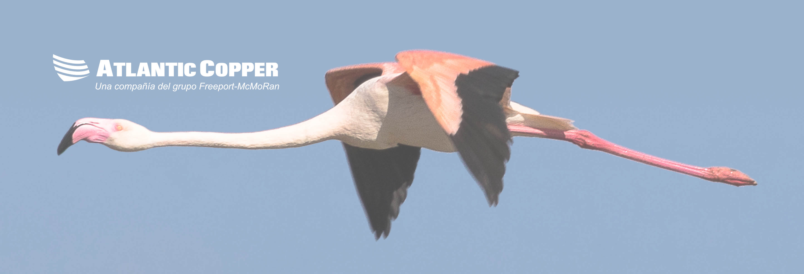

<ion-header>
  <ion-toolbar color="primary">
    <ion-title>
        Gestión Resíduos
    </ion-title>
    <ion-buttons slot="end">
        <ion-button (click)="nueva_basura()" *ngIf="admin" shape="round" fill="outline" color="secondary">
            Nueva Basura
        </ion-button>
        
        <ion-button (click)="cerrar_sesion()" shape="round" fill="outline" color="danger">
            Cerrar Sesión
        </ion-button>
    </ion-buttons>
  </ion-toolbar>


  <ion-card>
      <ion-card-content class="img-flamenco">
          
      </ion-card-content>
  </ion-card>
</ion-header>


<ion-content class="ion-text-center">

  <ion-card class="fondo-fabrica">
      <ion-card-content class="contenido ion-no-padding">
          <ion-grid>
              <ion-list class="transparente">

                  <ion-item *ngFor="let zona of zonas" (click)="irZona(zona)"  color="none" slot="start" class="ion-no-padding" detail>
                      <ion-avatar slot="start">
                          
                      </ion-avatar>
                    <ion-label>
                        <ion-text>
                           <h3> {{ zona.nombre }} </h3> 
                        </ion-text>
                        <ion-text >
                           <p class="ion-text-wrap"> {{ zona.area }} </p> 
                        </ion-text>
                    </ion-label>    
                      <!-- <hr> -->
                  </ion-item>
              </ion-list>

          </ion-grid>

      </ion-card-content>

  </ion-card>

</ion-content>